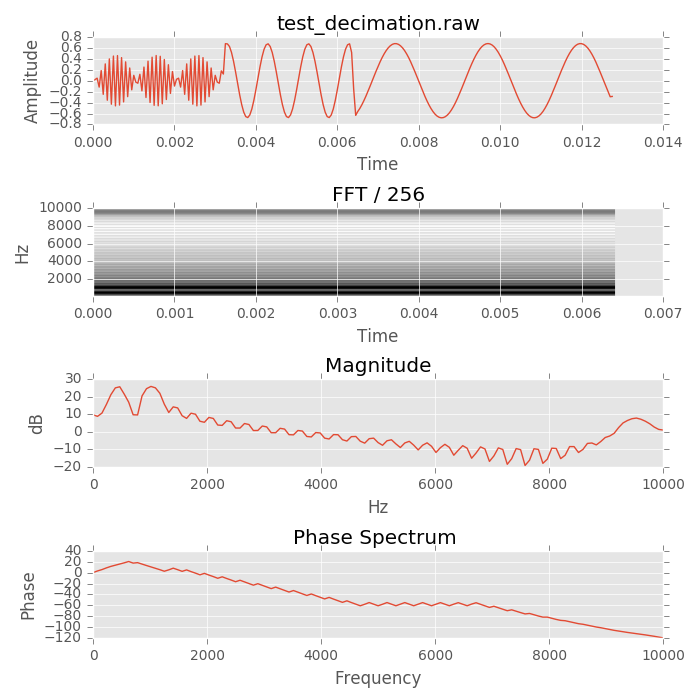
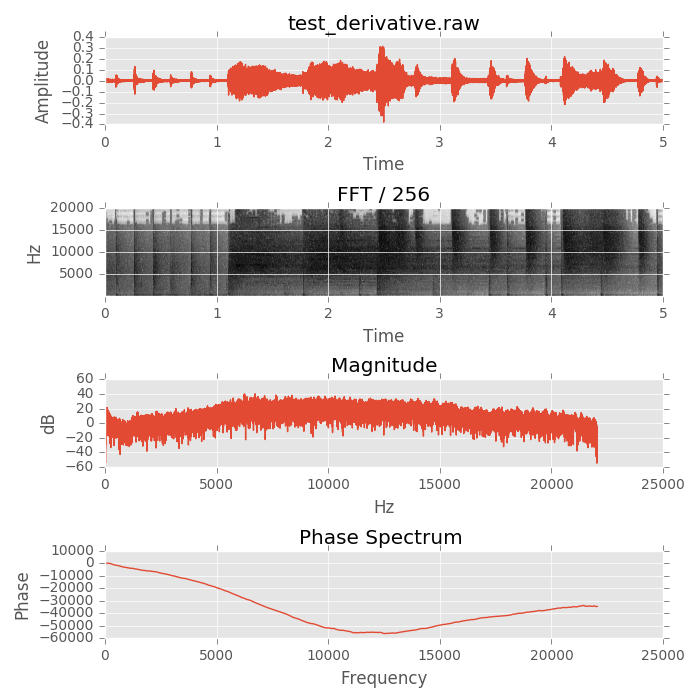
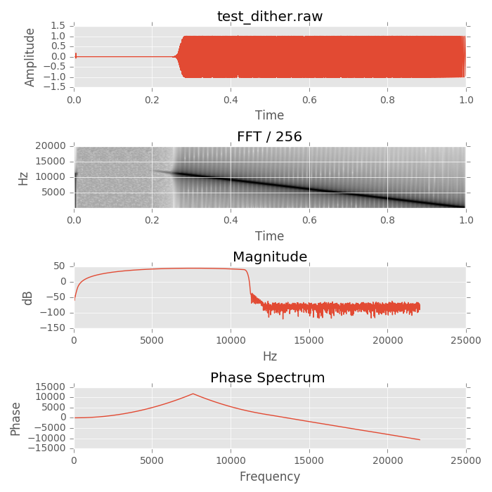
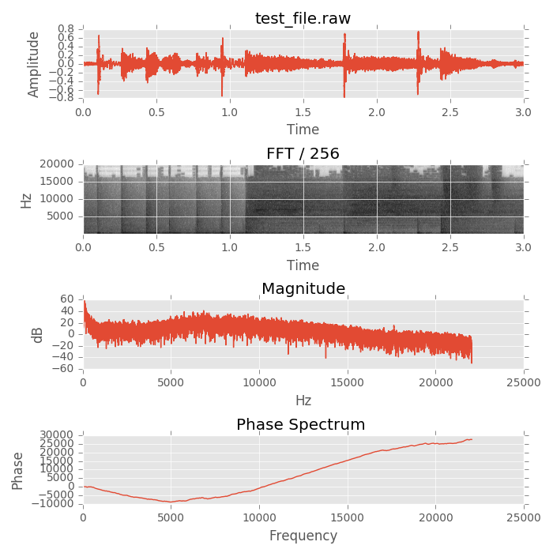
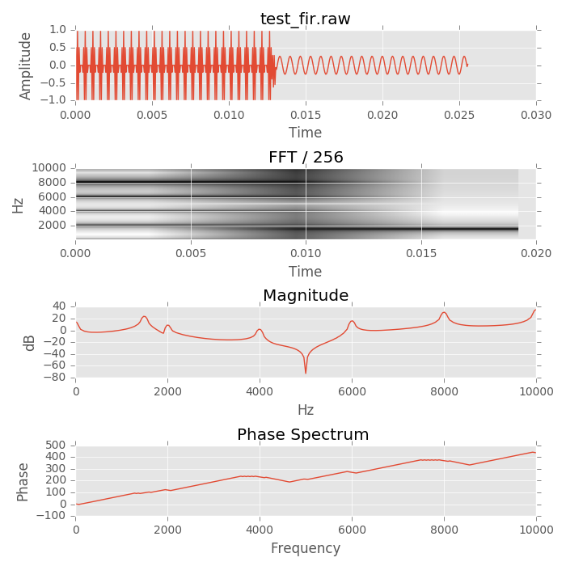
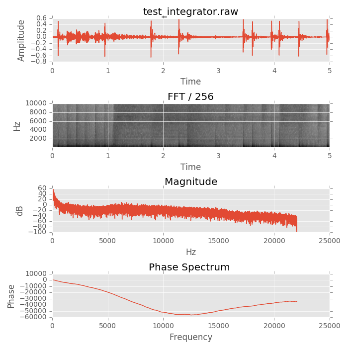
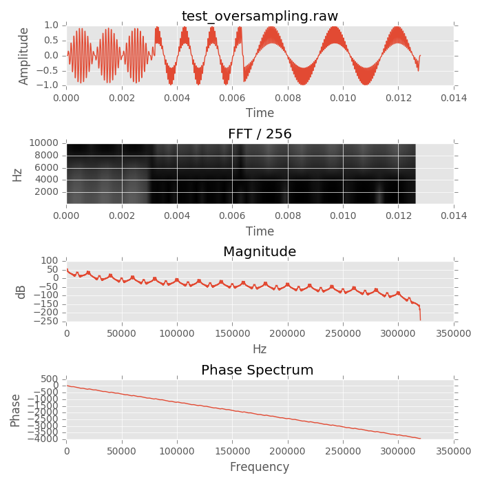
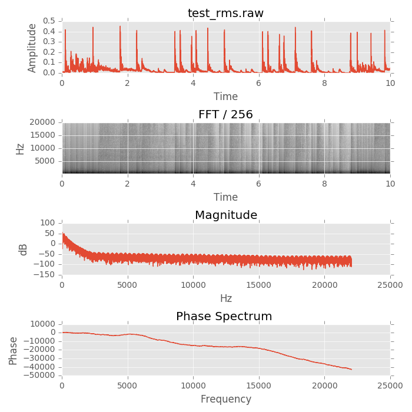
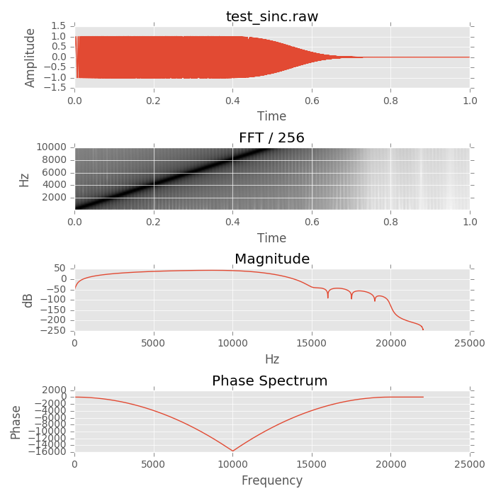
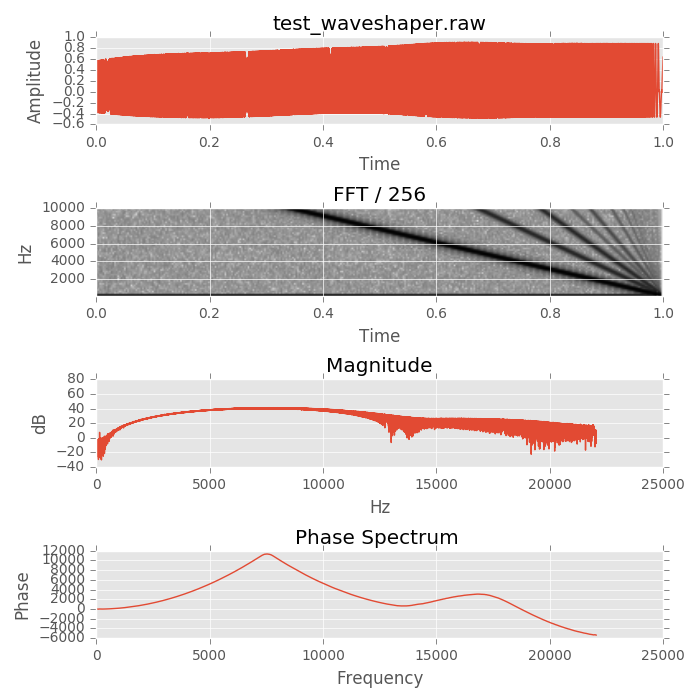

<body style='background-color:#000;color:#fff;font-face:monospace;' ><center><h1>nldproc tests</h1><h2>test_decimation</h2><br/><!--{{test_decimation}}--><h2>test_derivative</h2><br/><!--{{test_derivative}}--><h2>test_dither</h2><br/><!--{{test_dither}}--><h2>test_file</h2><br/><!--{{test_file}}--><h2>test_fir</h2><br/><!--{{test_fir}}--><h2>test_integrator</h2><br/><!--{{test_integrator}}--><h2>test_oversampling</h2><br/><!--{{test_oversampling}}--><h2>test_peakfollower</h2><br/><!--{{test_peakfollower}}--><h2>test_rms</h2><br/><!--{{test_rms}}--><h2>test_sinc</h2><br/><!--{{test_sinc}}--><h2>test_waveshaper</h2><br/><!--{{test_waveshaper}}--></body></center>